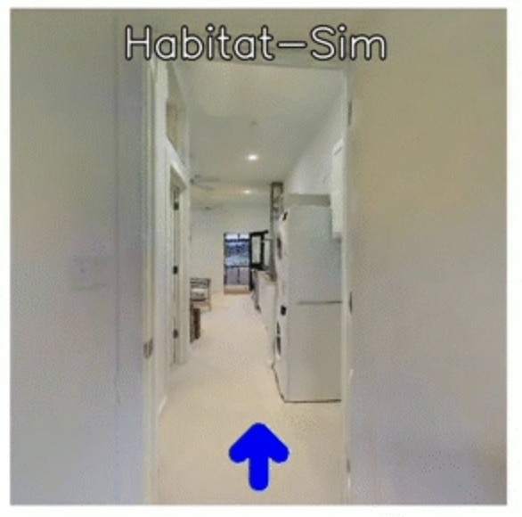
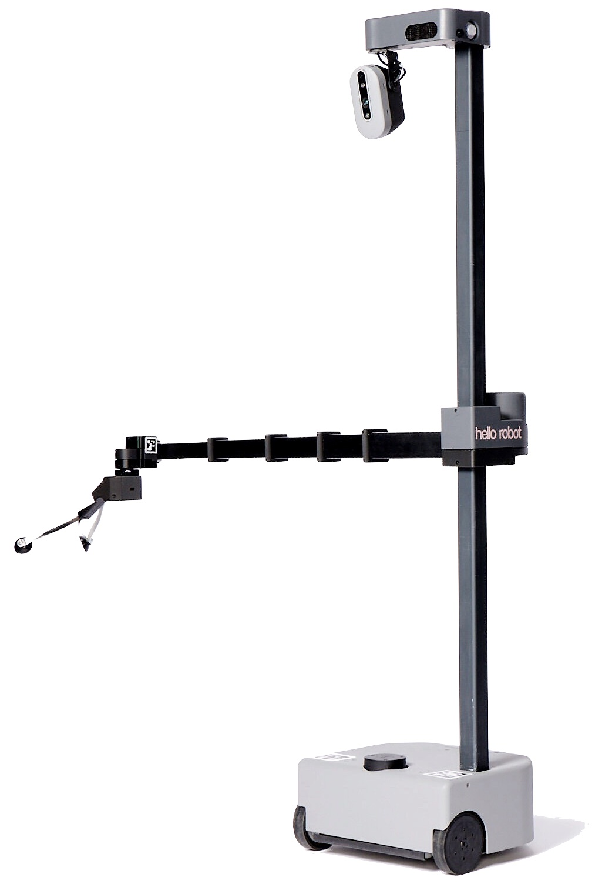

Where is my robot butler?
- Why is everyone using language models?
- Why use learning based methods when control works?
- What's with Foundation models for robotics?
- Will GPT-5 be a robot? 😱
Bring your own robot, let's add language to your research
Projects will be scoped by prior hardware/simulator experience -- but knowledge of Deep Learning + one specialty (NLP/CV/Robotics) is basically required. Send Qs to Yonatan (ybisk@cs).
- LLMs & Foundation Models
- Instruction following & Dialogue
- Task and Motion Planning
- End-Effector & real-valued control
- Semantic Mapping (2D and 3D)
- World Models
- How do you define or evaluate Dialogue?
- Limitations of offline and unimodal pretraining
- How does embodiment shape meaning?
- Discrete vs continuous spaces and representations.
- When is Sim2Real possible? What's about manipulation?
- I only have one brain, do I need more than one model?
- Time & Place: 3:30am - 4:50pm Tu/Th -- DH 1212
- Canvas
- Instructor: Yonatan Bisk
Here are a few things that haven't made it into the schedule yet
| Grades | ||
|---|---|---|
| Paper Summaries | See format below | 5pts * 8 papers (indiv) |
| Participation/Pres. | ||
| Sept 12 | Project Pitch | 5pts (group) |
| Sept 17 | Perspective exercise | 5pts (indiv) |
| Sept 19 | Red Teaming | 5pts (indiv) |
| Oct 31 | Midterm Presentation | 5 pts (group) |
| Oct 31 | Midterm feedback | 5 pts (indiv) |
| Dec 5 | Final presentation | 10 pts (group) |
| Project Reports | ||
| Sept 26 | Meaning & Ling Analysis | 5 pts (group) |
| Oct 10 | Code-as-policies, ... | 5 pts (group) |
| Nov 14 | Pragmatics and Legibility | 5 pts (group) |
| Dec 5 | Final Report | 10 pts (group) |
Groups: Both seminar and project based assignments will be done in groups. Groups will likely be capped at five people.
Equal Participation: All reports must include a breakdown of each teammate's contributions.
Paper Summary (5pts)
- What assumptions were made about:
- meaning
- the environment
- interaction / social intelligence
- What extension would you propose? Scope it to less than 9mos of work, and justify
- What do you really like about this work?
Project Pitch (5pts)
- Task, Environment, and Skills Definitions
- Minimal language covered and stretch goals
- Who do you think will be most interested?
- What will your project enable in the future?
- Paint me a picture of how/where/who will use this
Midsemester Presentation (5pts)
- Interactive demo of basic skills
- Example of successful composition
- Demonstration and analysis of failures
- Proposal of changes for final demo (including rescoping)
Final Presentation (10pts)
- Interactive demo of compositional instructions
- Example of successful corrections/feedback
- Demonstration and analysis of failures
Final Report (10pts)
- 12 Credit: Technical write-up and specification of system (including code)
- 12 Credit: Technical write-up of model design (including code)
- All: Updated design elements for the intermediate reports
- All: Literature Review of state of the field
- All: Discussion of key limitations to progress in this space
- All: So... what's the path to AGI?
There are a couple other simulators/platforms I also like, which we can discuss as options.
| Platform | Type | Notes |
|---|---|---|
| VLN-CE | Simulated Navigation  |
Minimal hardware experience Proj: Language to Angle/Distance Teams:No limit on teams |
| DexArm | Simple gripper |
Basic manipulation platform Proj: Language to 3D Space Teams: Two teams of ~4 |
| Hello Robot Stretch | Mobile Manipulator  |
Requires skill specifications Proj: Language to ... let's decide Teams (Probably) one team -- Let's see Control Code: Meta Home-Robot Collaborator: Chris Paxton |
Late Assignments
- All teams have 5 late days, these are only applicable to reports (not demos).
- Paper summaries lose 1pt per day late
COVID Details:
In the event a student tests positive for COVID-19, they will be invited to attend discussion virtually and will be expected to participate as usual. This includes participation points for raising their hands with questions/answers and submission of lab-notebooks. Note, that students who attend class while exhibiting symptoms will be told to leave and join virtually for the protection of all others present.
Accommodations for Students with Disabilities:
If you have a disability and have an accommodations letter from the Disability Resources office, we encourage you to discuss your accommodations and needs with the instructors as early in the semester as possible. We will work with you to ensure that accommodations are provided as appropriate. If you suspect that you may have a disability and would benefit from accommodations but are not yet registered with the Office of Disability Resources, we encourage you to contact them at access@andrew.cmu.edu.
- Can we use other platforms? Yes! What robots do you have? Also checkout AI Maker Space
- What about custom sensors and hardware? Same answer :)
- What about other simulators? Same answer :)
- LTI Curriculum Categories? 12 Hour version can be counted for a Task and a Lab
- Do I /need/ simulator experience? No, but plan to spend some time getting the engineering setup
- Can I attend discussion without registering? It's best to register (6hrs) even if you've finished your classes, since I need to prioritize time, energy, and space on registered students. I'll try and update this once I have a room confirmed with the registrar and see how much space we have in the class.